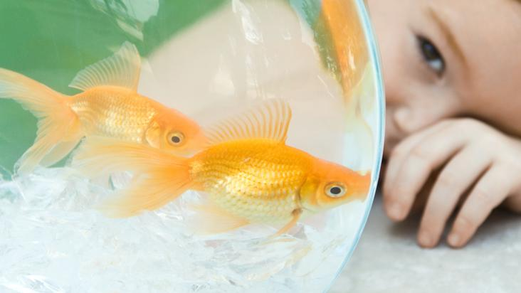

1. No hacen ruido: A diferencia de los otros animales caseros, los peces son bastante silenciosos. Lo único que puede hacer ruido, es la pecera y las burbujas que se sienten, pero con sutileza. De esta manera, si tenemos un bebé en casa o simplemente gozas con el silencio, los peces pueden ser unos excelentes compañeros.
2. Adiós a las manchas en la alfombra: Como viven en su mundo – la pecera- es innecesario preocuparse de limpiar sus desechos en la alfombra, o bien en el resto de la casa. Jamás encontrarás mal olor en los rincones y menos en tus maceteros. Sólo deberás preocuparte de mantenerles la pecera limpia y renovar el agua.

3. No necesitan ningún entrenamiento: Los perros, generalmente, requieren de gran espacio para poder correr o caminar. Es positivo para su salud, que sus amos los saquen a dar un paseo de vez en cuando. Sin embargo, muchas veces los dueños no tienen mucho tiempo. En este caso, los peces son los más indicados, ya que no necesitan que los saques de la pecera, ellos solos buscan la manera de entretenerse, así es que si no tienes tiempo y vives una vida muy apurada, los peces serán tu mejor aliado.
4. Tu bolsillo lo agradecerá: Los peces son tan pequeños, como la cantidad de dinero que se necesita para su mantenimiento. Lo más caro te saldrá una vez, que será comprar la pecera y acondicionarla, para que tus peces naden felices – se compran estatuas pequeñas en forma de barcos o plantas-. En cuanto a su alimentación, necesitarás de poca comida al mes y a muy bajo costo. Si cotizas bien, puedes encontrar comida hasta por $1.500.
5. Nuca más el “¿Pero con quién lo dejamos mientras salimos?”: Si tienes un pez como mascota, entonces podrás salir de tu casa, sin preocuparte demasiado por tu querida mascota. Los peces, sólo necesitan el mantenimiento del agua y comida. Con ello son felices, no piden más. Así es que dile adiós a las preocupaciones y no te preocupes, que los peces saben cuidarse solitos.
6. Dan tranquilidad: Es común que en refugios para adultos mayores, siempre exista una pecera. Esto, porque los ancianos, al mirar los peces, sienten tranquilidad y paz. Incluso, hay estudios médicos, que dan cuenta de la ayuda que otorgan los peces a personas que padecen Alzheimer.

7. No necesitan mucho espacio: Los perros y gatos necesitan caminar y dar vueltas por todos lados. En definitiva, prefieren la luz del día y salir a tomar sol. Sin embargo, en departamentos y casas pequeñas, no es posible mantenerlos felices, pero sí a los peces. Sólo ocuparán el espacio de la pecera y ya está.
